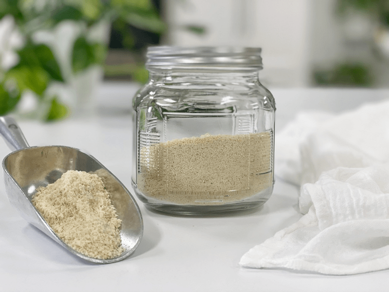
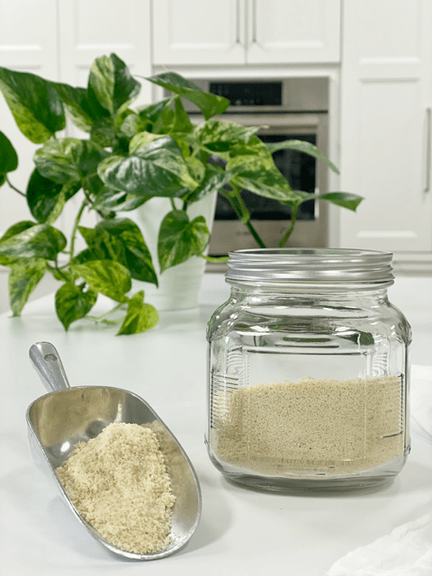

Cashew Flour – made from Whole Cashews
So the burning question might be… Why would I want to make cashew flour? There are many reasons in my book. First of all, cashews are a magical ingredient in the raw food world, regardless of what form you might use them in. But watch out, they have been gaining great popularity in the cooked world too. Our secret is out. hehe

Cashews don’t have a robust flavor of their own; they are just a vessel for fat, creaminess, and beautiful ivory coloring. Cashew flour will lend an ever so slight sweet hint of flavor, but don’t count on the flavor to really shine through. That makes a great reason to use it. Much like white flour in baked foods, it doesn’t add any flavor to the recipe.
Color white is another reason that I turn to cashew flour. Almond flour, buckwheat flour, oat flour, and coconut flour are other blonde colored flours that are great for recipes where you want the end color to be lighter. Such as in my recipe for raw Sugar Cookies or my Cashew Lemon Spritz Cookies. Having a variety of flours to lean on is great since so many of us are dealing with food allergies.
Did you know that cashews technically are not nuts? Instead, they are the seeds found in cashew apples, a fruit that grows on trees in tropical climates.
Best Made as Needed
I do recommend making this type of flour as needed. It is quick and easy, so it won’t take much time to do it on the spot, as long as you already have activated (soaked) and dehydrated cashews (an excellent habit to get into). This way, you won’t lose any possible nutrients. If you do make extra, store it in an airtight container and store in the fridge or freezer to keep it fresh.

Ingredients:
Yields 1 cup flour
Preparation:
- Start by soaking and dehydrating the cashews before using them to make the flour. Make sure that there isn’t any moisture in the cashews.
- Place the cashews in either; a dry container that comes with the Vitamix, a high-speed blender, or a food processor.
- To get the finest grind, use the Vitamix dry container.
- I often use my food processor.
- Process until the cashew break down to a small granule texture.
- Remember, when using whole cashews, this type of flour won’t get very fine Unless you push it through a fine-mesh screen to separate the different textures.
- Make as needed.
- Store any leftovers in the fridge or freezer to prevent it from going rancid (due to the natural fats found in them).
© AmieSue.com